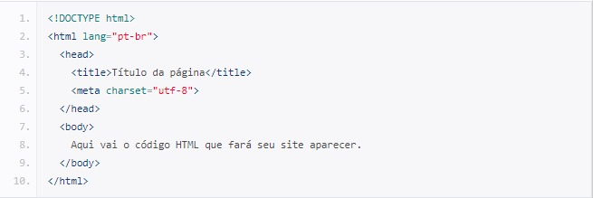

"Eu acredito que às vezes são as pessoas que ninguém espera nada que fazem as coisas que ninguém consegue imaginar."
TURING, Alan.
Eu sempre gosto de pensar em como a humanidade sempre criou máquinas para elas fazerem seu trabalho, digamos assim. Então desde que o mundo é mundo, as pessoas sempre tiveram máquinas para poder calcular de uma maneira mais rápida, por exemplo. E é com esse conceito que gosto definir a história dos computadores. Aqui nem vou levar em consideração os instrumentos usados de antigamente tipo o ábaco, por exemplo. Então vou levar em consideração algo mais dentro do que consideramos como um computador hoje. .
O Havard Mark I é um computador eletromecânico baseado em válvulas para a realização de diversos cálculos. Construído em 1944 em parceria com a IBM.
Em tempos de 2ª Guerra Mundial muita coisa foi desenvolvida pensando no aprimoramento e assim nasceu o gigante Colossus em dezembro de 1943, o Colossus utilizava válvulas eletrônicas para realizar cálculos complexos em alta velocidade. Ele recebia as mensagens criptografadas em fita de papel e usava análise estatística para determinar as configurações possíveis da máquina Enigma usada pelos alemães. O Colossus foi projetado para ser programável, o que o tornou muito mais flexível do que as máquinas anteriores.
Em 1946 entrou em funcionamento o Electronic Numerical Integrator and Computer (ENIAC). O computador foi produzido por uma parceria entre a universidade da Pensilvânia (UPenn) e a Eletronic Control Company sob encomenda do Exército dos Estados Unidos, com o objetivo de ser utilizado para realizar cálculos complexos dos laboratórios de testes de balística da instituição. Sua construção começou ainda em meio à Segunda Guerra Mundial, em 1943, mas ele só foi concluído três anos depois.
Inclusive, do ENIAC que veio a expressão “bug” que literalmente significa inseto. Escrevi sobre isso nesse posts do LinkedIn
Ir para o post do LinkedInTanto o Mak I, quanto o Colossus e o ENIAC eles praticamente ocupavam uma sala inteira pesando toneladas e não tinha a potência de uma simples calculadora hoje em dia hahahaha.
De 1959 a 1965 o marco dessa geração foram os transistores. Então das válvulas para os transistores permitiu a mudança de tamanho de maneira drástica.
De 1959 a 1970 foram desenvolvidos os circuitos integrados, os chips permitindo assim diminuir ainda mais os computadores
A partir de 1971 até os dias de hoje. De circuitos integrados passou para os microprocessadores, os chips continuam sendo utilizados. Marcado principalmente pelos computadores pessoas, em uma tradução literal.
Aqui temos nomes como o Bill Gates criando o BASIC, Steve Jobs criando o Apple I e o Macintosh, tornando assim o computador pessoal mais popular (já que antes era apenas para uso militar). Inclusive, a Apple que criou o mouse.
Aqui vai depender de quem fala, uns dizem que sim outros não. Mas falamos das IAs, criptomoedas como Bitcoin por exemplo, computadores quânticos e o tal do metaverso (que pra mim já morreu antes mesmo de nascer hahaha).
Clients, clientes-side ou front-end como é chamado é basicamente tudo o que conversa com o BROWSER ou navegadores como Edge (ex Internet Explorer), Opera, Chrome ou Safari. Ou seja, tudo o que o usuário fizer através do navegador.
Exemplos de linguagens usadas são: HTML, CSS, JavaScritp.
Servers, servers-sides ou back-end é tudo que conversa diretamente com o servidor como um banco de dados por exemplo. Onde se armazenam senhas e produtos como em um ecommerce.
Exemplos de linguagem usadas são: PHP, Ruby, Java, Python e JavaScritp.
Uma curiosidade aqui é que o JavaScript pode ser usado tanto pra Clients quanto pra Servers. Em Clients ele processa através do navegador. Por debaixo do navegador tem um módulo opensource chamado “https: v8.dv/”. No lado do servidor ele vai rodar através do NodeJS, é um programa que vai rodar o v8. É como se fosse um navegador sem as janelas. Tem as suas nuances, mas a sintaxe é a mesma.
É uma linguagem formal que, através de uma série de instruções, permite que um programador escreva um conjunto de ordens, ações consecutivas, dados e algoritmos para criar programas que controlam o comportamento físico e lógico de uma máquina.

A estrutura básica HTML quase sempre será dessa forma e você sempre, sempre começará seu HTML começando por esse código.
É possível compreender o documento em HTML de uma maneira muito simples, através de uma divisão de blocos das tags essenciais, conforme a seguinte estrutura:
A principal diferença entre as listas é que a ordenada enumera os elementos e a não-ordenada coloca marcadores em cima dos elementos.
Exemplos:
Ordenada:
Não ordenada